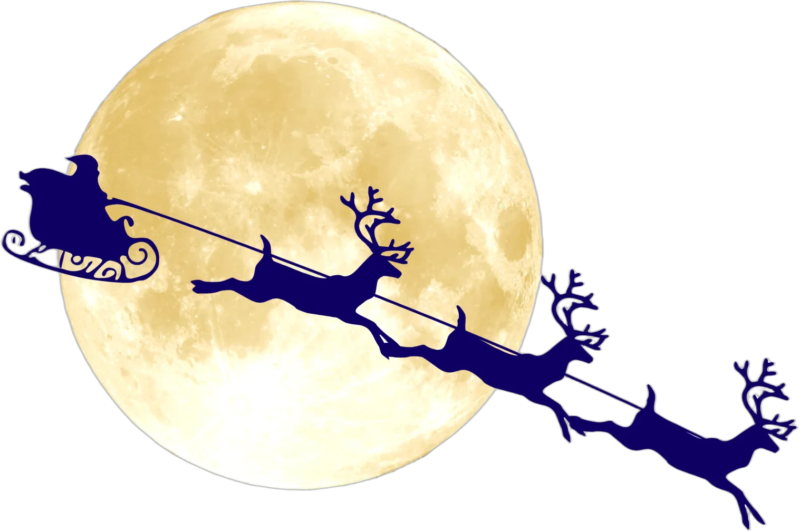

Les lutins de cette année
Ton tirage secret
Motus et bouche cousue !
Ho ho ho ! Quel est ton prénom ?

C'est l'arrière-boutique du Père Noël : entre le mot de passe de l'atelier pour gérer la liste familiale et lancer le tirage.